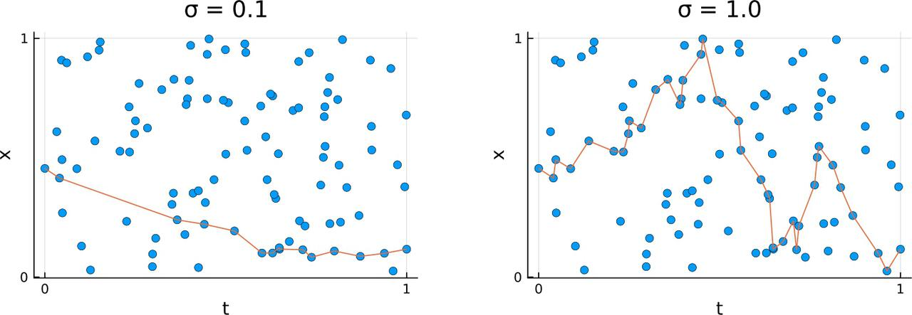

3 Extracting reaction paths from simulations
Once we obtained a χ function from ISOKANN, we might be tempted to directly compute a reaction path following the gradient of χ as in (4.14). This, however, is problematic as the neural network approximation is good only in the region of sufficient training data. The gradient of χ, however, could point away from this region, accumulating more and more approximation errors and quickly lead to unobserved unphysical states. One might solve this problem by projecting back to the physical regime, for example, via energy minimization. This, however, requires access to the original systems potential/forces and is not only computationally expensive but also involved from an implementation perspective.
We now propose an alternative method, which can be applied as a post-processing step to already sampled simulation data without requiring further information about the system. Applied as a post-processing step to molecular simulations, together with ISOKANN, the subsampled reaction path provides researchers with a direct step-by-step representation of the slowest process (which is contained in the simulation data) by identifying this process and filtering out the intermediate fluctuations.
To this end, we understand the learned χ values as an order parameter for a set of simulation data in Ω. As shown in (4.13), the membership values are interpreted to be proportional to mean holding times of a macro state. The level sets of the function in this regard correspond to micro states which “take place simultaneously” in this newly defined time axis. By interpreting this mean-holding-time as a “temporal” parameter, we can extract macroscopic reaction paths from simulation data. Replacing the time from the simulation by χ furthermore allows us to incorporate data of different simulations, treating them merely as χ ordered data points, and thus allowing for higher resolution of the results.
The core problem of choosing a path through the data samples consists of balancing the progress in the reaction direction, , versus spatial movement on the level sets of χ. More formally we look for an ordered list of samples from simulation points in Ω, such that is an increasing sequence with smooth spatial transitions, that is, without large deviations . To this end, we will model the spatial movement as a Brownian motion through the time-parameter χ.
For the classical Brownian motion , the probability of obtaining a specific set of samples, conditioned on the sampling time points , is given by the finite-dimensional distribution [9] (in our case we assume and as well as ):
This formula is typically used to obtain the probability given a specific set of . In our case, we will use it to also compare different sampling times by setting , which allows to balance temporal with spatial jumps. This can be justified from a Bayesian perspective as prescribing a uniform prior on the number and length of time intervals (as we have no preference for specific values to appear in the solution) although further investigation of this view may be warranted. The parameter σ plays the role of a smoothing parameter, balancing the likelihood of jumps in space or time. A high σ allows for more erratic jumps over short time spans while a lower σ favors spatially closer jumps possibly necessitating longer time-spans, as illustrated in Figure 4.1.

Figure 4.1 Illustration of the maximum likelihood path (4.25) on 100 points distributed uniformly in space and time. For lower σ values (left), the path prefers less jumps with small spatial displacement, while for higher σ (right) the path goes through more points at the cost of more erratic movement. Note that this is just an illustration of the maximum likelihood path with synthetic data in classical time t (which in our application will be replaced by χ).
We now continue to find the maximum likelihood path through our sampling data by replacing the classical time parameter with the samples χ value, such that .
Taking the logarithm allows us to transform (4.25) into a sum of log probabilities, with
Finding the maximal likelihood path then corresponds to solving the shortest path problem from a (set of) point(s) to a (set of) point(s) with edge distance between two points (nodes)
where transitions forward in time (i. e., increasing χ-value) are enforced by the corresponding ∞ weight. The shortest path problem can be solved with the Bellman–Ford algorithm [4].
Of course, the assumption of uniform Brownian motion for the underlying dynamics is far-fetched for an actual molecular system. However, with only finite simulation data, the locally possible jumps will be dictated mainly by the available data which already incorporates the physical drift. The Brownian assumption introduces only a small bias, which is largely negligible for the choice of paths in the temporal, that is, χ direction, as any larger deviations from the Brownian distribution will already be reflected in the available data.
We believe this can be improved in cases where the acceleration (force and masses) and the diffusion coefficient σ of the dynamics are known. This, however, is not straightforward, as we have replaced the ordinary time with χ, which requires some projection of the stochastic process.
In this regard, our proposed algorithm can be understood as a simple heuristic filtering method to obtain a smooth path through already provided samples along the learned reaction coordinate from to (or vice versa). The result is the most-likely path (under the Brownian assumption) between the extremal conformations identified by χ. Being composed of the actually simulated, hence physically relevant, data it provides a smooth transition through the identified slowest process indexed by the mean holding time of the corresponding macro state.